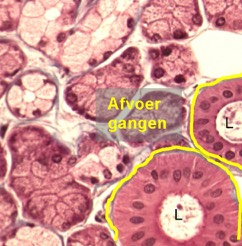
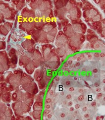
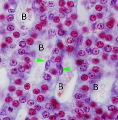

Bepaal of het kliergedeelte exocrien of endocrien is:
A) Wanneer kliersecreet direct wordt afgegeven aan de ‘buitenwereld’ spreken we van exocriene klieren (exo=naar buiten). Secretieproducten worden dan via afvoergangen naar de plaats geleid waar ze hun functies kunnen uitoefenen. Kijk na of je afvoergangen terugvindt.
B) Wanneer er geen afvoergangen zijn heb je waarschijnlijk te maken met een endocriene klier (endo=binnen). Deze endocriene klieren produceren hormonen die meestal via de bloedbaan doorheen het hele lichaam worden vervoerd. Zijn er bloedvaatjes in de buurt van de kliercellen?
C) In sommige organen zitten zowel zones met exocrien als met endocrien klierweefsel, deze klieren noemen we gemengd. Is het een gemengde klier?

Tussen de groepjes secreterende cellen zie je 2 afvoergangen. Secreet wordt getransporteerd doorheen het lumen (L) van deze buisjes. Dit is een exocriene klier.

Dit is een gemengde klier met een endocrien en een exocrien gedeelte. In het exocrien gedeelte zie je een kleine afvoergang (pijlpunt), in het endocrien klierdeel zie je bloedvaten tussen de kliercellen.

Tussen de secreterende cellen van dit klierweefsel zie je de bloedvaten (B) die enkel afgelijnd zijn door endotheel (pijlpunten wijzen naar enkele kernen). Dit is een endocriene klier.
Vordering zelfstudie klierepitheel: